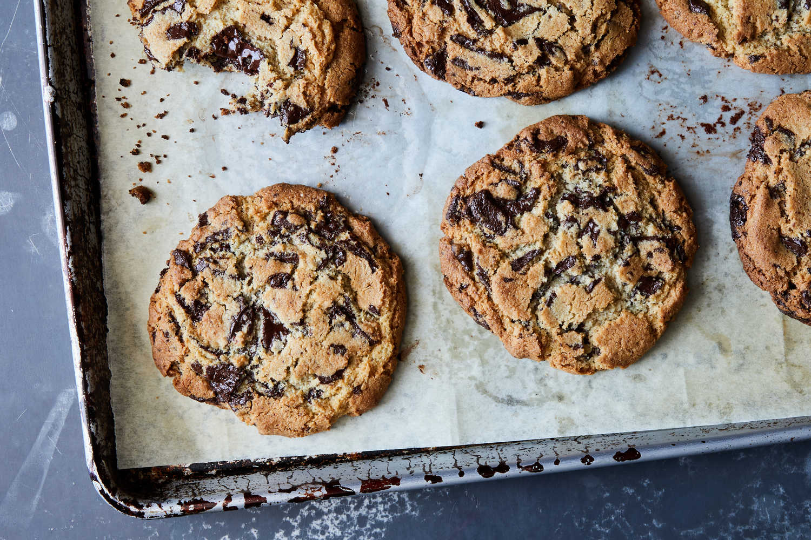

Home
Gluten Free Cookie Recipe

Description
Almond flour is the only special ingredient needed to make these cookies, and it can be found in the baking aisle or the health food section of the grocery store. It provides the protein and structure of a classic wheat flour, while keeping the cookie perfectly chewy in the center. If you want a stronger almond flavor, toast the almond flour in a dry skillet over medium-low heat until golden and fragrant, and cool before using. This recipe was adapted from the Times’s famous chocolate chip cookie recipe, but unlike that recipe, this dough does not require 36 hours of refrigeration before baking. Chopped chocolate or feves make for a gooier cookie, but classic chocolate chips work here, too. This recipe makes huge, bakery-style cookies, but if you want smaller cookies, use ¼-cup mounds of dough and bake for 16 to 18 minutes, or a 2-tablespoon scoops and bake for for 10 to 12 minutes.
Ingredients
- 2¾cups/310 grams finely ground almond flour
- ¾teaspoon kosher salt
- ½teaspoon baking soda
- 10tablespoons/140 grams unsalted butter, at room temperature (1¼ sticks)
- ½cup/110 grams light brown sugar
- ½cup/100 grams granulated sugar
- 1large egg
- 1½teaspoons vanilla extract
- 12ounces/340 grams bittersweet chocolate feves or chips, or coarsely chopped bar chocolate
- Sea salt, for finishing (optional)
Steps
- Heat the oven to 350 degrees. Line two baking sheets with parchment paper.
- In a medium bowl, whisk the almond flour, salt and baking soda to combine.
- Using a mixer fitted with the paddle attachment, cream the butter, brown sugar and granulated sugar on medium speed until very light, 3 to 4 minutes.
- Add the egg and mix on medium speed to combine. Scrape the bowl well, then add the vanilla and mix to combine.
- Add the dry ingredients and mix on low speed until just combined, about 10 seconds. Scrape the bowl well and mix on low speed to ensure the mixture is homogenous.
- Add the chocolate and gently mix to incorporate it. Scoop the dough into 10 3½ ounce/100-gram mounds of dough the size of generous golf balls, and transfer them to the prepared baking sheets. Stagger the rows to allow the cookies room to spread.
- Gently press the cookies down slightly with your fingers until about 1½ inches thick. Sprinkle lightly with sea salt, if using. Bake the cookies, switching racks and rotating the sheets halfway through, until they’re golden brown around the edges and just barely set in the center, 18 to 22 minutes. Transfer sheets to a wire rack for 10 minutes, then transfer cookies with a spatula onto another rack to cool a bit more.
Cook's Note
Enjoy!!